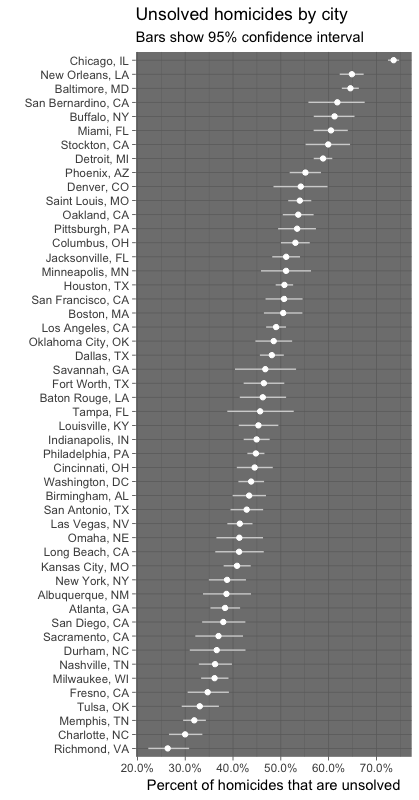
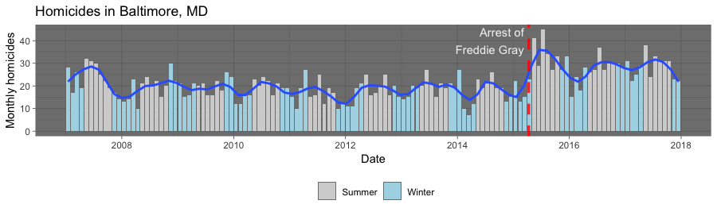

B Appendix B: Homework
This section provides the homework assignments for the course.
B.1 Homework #1
Due date: Sept. 11 by 5:00 pm
For this assignment, you will submit the assignment to me by email by the due date. You should include one file in your submission:
- A Word document with seven paragraphs. Each paragraph should be headed with the name of one swirl lesson and the body of the paragraph should describe that lesson and what you learned from it.
For this homework assignment, you’ll be working through a few swirl lessons that are relevant to the material we’ve covered so far. Swirl is a platform that helps you learn R in R—you can complete the lessons right in your R console.
Depending on your familiarity with R, you can either work through seven lessons
of your choice in the R Programming: The basics of programming in R and
Getting and Cleaning Data courses (suggested lessons are listed further below)
(Option #1), or you can work through seven lessons of your choice taken from
any number of swirl’s available courses (Option #2) .
For each lesson completed, please write a few sentences that cover: 1. A summary of the topic(s) covered in that lesson, and 2. The most interesting thing that you learned from that lesson. Turn in a hardcopy of this (with your first and last name at the top) during class on the due date.
To begin, you’ll first need to install the swirl package:
If you’ve never run swirl() before, you will be prompted to install a course.
You can do that with the install_course function. For example, to install the
R Programming course, you would run:
Once you’ve installed a course, every time you enter the swirl environment with
swirl(), R Progamming should show up as a course option to select. You can
enter R Programming to start lessons in that course by typing the number in
fromt of it when you run swirl().
Once you have at least one course installed, you call the swirl() function to
enter the interactive platform in RStudio. The console will take you through a
few prompts: you’ll give swirl a name to call you, and take a look at some
commands that are useful in the swirl environment. Those commands are listed
further below.
After calling swirl(), you may be prompted to clear your workspace variables by running rm=(list=ls()). Running this code will clear any variables you already have saved in your global environment. While swirl recommends that you do this, it’s not necessary.
Some of these lessons complement online courses through Coursera, so sometimes you will be asked after you complete a lesson if you want to report your results to Coursera. You should select “No” for that option each time.
B.1.1 Option 1
For Option 1 of this homework, you will need to work through seven of the 15
available lessons in the R Programming course. Here are some suggestions for
particularly uesful lessons that you could choose (the lesson number within the
course is in parentheses):
R Programming course:
- Basic Building Blocks (1)
- Sequences of Numbers (3)
- Vectors (4)
- Missing Values (5)
- Subsetting Vectors (6)
- Logic (8)
- Looking at Data (12)
- Dates and Times (14)
Getting and Cleaning Data course:
- Manipulating Data with dplyr (1)
- Grouping and Chaining with dplyr (2)
- Dates and Times with lubridate (4)
Each lesson should take at most 10–15 minutes, but some are much shorter. You can complete the lessons in any order you want, but you may find it easiest to start with the lowest-numbered lessons and work your way up, in the order we’ve listed the lessons here.
You’ll be able to get started on some of these lessons after your first day in class (“Basic Building Blocks”“, for example), but others cover topics that we’ll get to in weeks 2 and 3. Whether or not we’ve covered a swirl topic in class, you should be able to successfully work through the lesson. At the end of each lesson, you may be asked if you would like to receive credit for completing this course on Coursera.org. Always choose”no" for this option.
Again, you’ll need to compose and turn in a few sentences for each lesson. Make sure to include a summary of what each lesson was about, and the most interesting thing about that lesson.
B.1.2 Option 2
If you’re already somewhat familiar with R, you might want to choose your seven
lessons from other swirl courses instead of or in addition to those available in
the R Programming and Getting and Cleaning Data courses.
Check out the list of available Swirl
Courses to see which ones you would like
to install and check out available lessons for. For example, to choose a lesson
in the Exploratory Data Analysis course, you would run:
After entering the Exploratory Data Analysis course, you could choose from any
one of its available lessons.
In your written summary for each lesson (again, a few sentences that cover a summary of the lesson and the most interesting thing you learned), make sure to specify which course each lesson you completed was from.
B.1.3 Special swirl commands
In the swirl environment, knowing about the following commands will be helpful:
- Within each lesson, the prompt
...indicates that you should hit Enter to move on to the next section. skip(): skip the current question.play(): temporarily exit swirl. It can be useful during a swirl lesson to play around in the R console to try things out.nxt(): regain swirl’s attention afterplay()ing around in the console.main(): return to swirl’s main menu.bye(): exit swirl. Swirl will save your progress if you exit in the middle of a lesson. You can also hit the Esc. key to exit. (To re-enter swirl, runswirl(). In a new R session you will have to first load the swirl library:library(swirl).)
B.1.3.1 For fun
While they aren’t required for class, you should consider trying out some other swirl lessons later in the course. You can look through the course directory to see what other courses and lessons are available. For the first part of our course, you might find the “Exploratory Data Analysis” course helpful. If you would like to learn more about using R for statistical analysis, you might find the “Regression Models” course helpful.
B.2 Homework #2
Due date: Sept. 25 by 5:00 p.m.
For this assignment, you will submit the assignment to me by email by the due date. You should include three files in your submission:
- The final rendered Word document (rendered from an RMarkdown file).
- The original RMarkdown file used to create that final document.
- The dataset you used for the assignment.
For this assignment, start by picking a dataset either from your own research or something interesting available online (if you’re struggling to find something, check out Five Thirty Eight’s GitHub data repository). You will then use this dataset to practice what you’ve learned with R so far. This will also be a chance, if you’re using a dataset from your own research for me to get an idea of how you might be planning to use R in future research.
Very important note: Some research datasets have privacy constraints. This includes any datasets collected from human subjects, but can also include other datasets. For some projects, the principal investigator may prefer to keep the data private until publication of results. Before using a dataset for this project, please confirm with your research advisor that there are no constraints on the data. I do not plan to make the results of this assignment public, but I also do not want to us to be emailing back and forth a dataset with any constraints.
Using your dataset, create an RMarkdown document with the content listed below.
Be sure to set the echo option to TRUE so all of your code will also
print out to the Word document. Include in the RMarkdown document: (1) your
full name; (2) the due date of the assignment; and (3) a title that includes
“Homework 2”. These should all be set in RMarkdown, not changed in the
Word output.
Each section I’ve listed below should be included in the RMarkdown document as
its own section, with a section header created using Markdown code.
- Section 1: Description of the data: Describe the dataset you are using, both in terms of the content (what is this data measuring? how was it collected? what kinds of research questions are you hoping to use it to answer?) and in terms of its format (what type of file is it saved in? what if it is in a flat file, is it fixed width or delimited? if it is delimited, what is the delimiter? if it is binary, what is the program that would normally be used to open it?). (20 points)
- Section 2: Reading the data into R: Include code that reads the data into
R and assigns it to a dataframe object that you can use later in the document.
Explain in the text which R function you used to read in the data (e.g.,
read_csv) and which package it came from (if it was not a base R function). If there were any special options you needed to use (e.g.,skipto skip some rows without data), list those and explain why you used them. Next, include some code to clean the data (e.g., rename columns, convert any dates into a “Date” format). You can filter to certain rows if you would like, but do not filter out missing values, as we’ll want to learn more about those later. (20 points) - Section 3: Characteristics of the data: Describe the dataframe you just
read in. How many rows does it have? How many columns? (Use inline code in the
RMarkdown document to put this information into a sentence that reads “This
dataframe has … rows and … columns.”.) What are the names of the columns?
What does each row measure (i.e., what is the unit of observation)? Include a
table (using Markdown directly or
kable) explaining what each column measures. This table should have three columns: (1) the column name in the R dataframe;
- a very brief description of what each column measures; and (3) the units (if any) of the measurement in the column. (20 points)
- Section 4: Summary statistics: Pick three columns of the dataframe. Use
the
summarizefunction to get the following summaries of these columns: (1) minimum value; (2) maximum value; (3) mean value; (4) number of missing values. If there are missing values, make sure you use the appropriate options in summarizing these values to exclude those when calculating the minimum, maximum, and mean. Assign the result of thissummarizecall to a new R object, and print it out, so these summaries show up in your final, rendered Word document. (20 points) - Section 5: Visualizing the data: Create two plots of your dataframe. One
should use a “statistical” geom (e.g., histogram, bar chart, boxplot) and one a
“non-statistical” geom (e.g., scatterplot, line plot for time series). Explain
why these plots help you learn more about this data and about the interesting
research questions you’re hoping to explore with the data. Be sure to customize
the final size of each plot in the Word document using the
fig.widthandfig.heightcommands. For each plot, also be sure to customize the x- and y-axis labels. Finally, explain how each plot is following at least two of the principles of “good graphics” covered in week 4 of the course (Chapter 4 of the book)—if necessary, useggplotfunctions and options to make the plots comply with some of these principles. (20 points)
B.3 Homework #3
Due date: Oct. 16
This homework includes several parts. Make sure you complete each part for full credit (100 points).
- Complete your homework in an RMarkdown document and knit it to either Word or PDF to submit. Change your global options so that no warnings, messages, or errors are printed out, but that so all code and results are printed. (10 points)
- Select one of the figures you created for the last homework. You will be improving
that figure in this part of the homework.
- Go through the six guidelines for good graphics we discussed in Chapter 6. Re-create the same plot you created in the last homework and, in a paragraph or two, list which of these elements you currently have in the plot and how these elements help make the plot more effective. (10 points)
- Select three of these guidelines for which you either aren’t using them in the current graph or could add to what you currently have in the plot. Create a new version of the plot based on your choice. Include a paragraph explaining how these changes make the plot more effective and how you added them. (20 points)
- In the
titanicpackage (available on CRAN), there’s atitanic_traindataset we’ll use for this question.- Load that dataset and create a dataframe object limited to the columns
SurvivedandAge. Change the labeling for theSurvivedcolumn so that it says “Survived” instead of “1” and “Died” instead of “0”. Print out the oldest five people who survived and who died (so, you’ll be printing out 10 rows total). (10 points) - Create a histogram of the ages of people in this dataset, faceted by whether or
not they survived. Arrange these so that they are vertically aligned rather than
side by side (Hint: check the
nrowoption when faceting). Change the label on the y-axis to be something that more precisely describes what’s being shown (rather than “count”) and add a title to the plot. (10 points) - Determine the mean age for each group (survived and died) for everyone who has a non-missing age, as well as the total number of people in the group and the number of people with age information missing for the group. Print out a two-row dataframe with this summary information (it should have columns for (1) which group (survived / died); (2) the mean age of people in the group with non-missing age data; (3) the total number of people in the group; and (4) the number of people in the group with missing age data). (15 points)
- Run a statistical test of whether there is a difference in the mean ages between the two groups (Hint: you might want to google something like “test difference two means”). You can run this test either using a simple statistical test or by fitting a linear regression—you may take either approach. (15 points)
- Load that dataset and create a dataframe object limited to the columns
- There’s a radio show on National Public Radio called “Weekend Edition”, and
each week they have a “Sunday Puzzle”. The puzzle for the week ending August 5,
2018 was this: “I said think of a familiar two-word phrase in eight letters
with four letters in each word. The first word starts with M. And I said move
the first letter of the second word to the end, and you get a regular
eight-letter word, which, amazingly, other than the M, doesn’t share any sounds
with the original two-word phrase. What phrase is it?”. The winner had this to
say about how he solved the problem: "I went to the National Puzzlers’ League
website and pulled up a list of eight-letter words that start with the letter M
and just started scanning through it…’. You can solve this puzzle using R
(some of the
stringrfunctions, likestr_countandstr_sub, will be particularly helpful). Write R code to solve this puzzle. (10 points)- Hint 1: Work backwords. Start with eight-letter words, and apply a backwards transform to the one described to transform them into two four-letter words.
- Hint 2: This link might prove very useful: https://github.com/dwyl/english-words.
B.4 Homework #4
Due date: Oct. 30
For this homework, you will use a data set collected by the Washington Post on homicides in 50 large U.S. cities. The data is available through their GitHub repository: https://github.com/washingtonpost/data-homicides. You can read their accompanying article at https://www.washingtonpost.com/graphics/2018/investigations/where-murders-go-unsolved/.
Submit your homework by email. You should include the Rmarkdown file (.Rmd) and the output Word document.
- Read in the data as an R object named
homicidesand create a new column calledcity_namethat combines the city and state like this “Baltimore, MD”. (15 points) - Create a dataframe called
unsolvedwith one row per city that gives the total number of homicides for the city and the number of unsolved homicides (those for which the disposition is “Closed without arrest” or “Open/No arrest”). (15 points) - For the city of Baltimore, MD, use the
prop.testfunction to estimate the proportion of homicides that are unsolved, as well as the 95% confidence interval for this proportion (we’re assuming that the data from the years covered by this dataset is a representative sample of Baltimore in a larger set of years). Print the output of theprop.testdirectly in your RMarkdown, and then save the output ofprop.testas an R object and apply thetidyfunction from thebroompackage to this object and pull the estimated proportion and confidence intervals from the resulting tidy dataframe. (20 points) - Now use what you learned from running
prop.testfor one city to runprop.testfor all the cities. Your goal is to create the dataframe you need to create the figure shown below, where the points show the estimated proportions of unsolved homicides in each city and the horizontal lines show the estimated 95% confidence intervals. Do this all within a “tidy” pipeline, starting from theunsolveddataframe that you created for step 3. Usemap2frompurrrto applyprop.testwithin each city and thenmapfrompurrrto applytidyto this output. Use theunnestfunction from thetidyrpackage on the resulting list-column (from mappingtidyto theprop.testoutput list-column), with the option.drop = TRUE, to get your estimates back into a regular tidy data frame before plotting. (25 points) - Create the plot shown below. Hint: Check out the
geom_errorbarhgeom with theheight = 0option to get the horizontal lines for the confidence intervals. To get full points, be very careful to make sure that all labeling, color choices, figure dimensions, etc., in your figure match the figure shown here. (25 points)

B.5 Homework #5
Due date: Nov. 13
For this homework, you will continue using the dataset used for Homework #4. You will submit this project by sending me the link to a GitHub repository. For the write-up of this homework, you’ll need to write an RMarkdown document and render it to a pdf file within the R Project for the GitHub repository.
B.5.1 Setting up a GitHub repository for this project
Take the following steps to set up your GitHub repository for the homework (we will work on this as an in-course exercise):
- Set up a local (i.e., on your computer) R project with subdirectories for the data, writing (this is where you’ll put your Rmarkdown file and the output file), and figures.
- Download the Washington Post data and save it in an appropriate place in this R project directory.
- Initialize git for the R project and make your initial commit.
- Create an RMarkdown file for your homework answers in the appropriate subdirectory and save it. Commit this change with an appropriate commit message. (At this stage, you can look at your “History” in the git commit window to see the changes you’ve made so far.)
- Login to your GitHub account and create a new, blank repo with the same name as your R project. (If you have not already set up an SSH key to make it easier to push back and forth between your computer and GitHub, do so now.)
- On your computer, specify your GitHub repository as the remote for your project and do an initial push to send all the files to the GitHub repo. Look at your repository on GitHub to make sure it worked.
- Add a README.md file to the top level of your R project (on your local computer) using Markdown syntax and then commit the change locally and push to your GitHub repository.
For the README.md file, you can create a text file in RStudio and save it as “README.md”. You can then write this file using Markdown syntax (like RMarkdown, but without any code chunks).
As you work on your homework, make sure you commit regularly (with helpful commit messages). You should have at least 15 commit messages in your history for the repo by the time you turn in the homework.
Select one of the following two figures to create for the homework:
- Choice 1: Pick one city in the data. Create a map showing the locations of the homicides in that city, using
the
sfframework discussed in class. Usetigristo download boundaries for some sub-city geography (e.g., tracts, block groups, county subdivisions) to show as a layer underneath the points showing homicides. Use different facets for solved versus unsolved homicides and different colors to show the three race groups with the highest number of homicides for that city (you may find thefct_lumpfunction fromforcatsuseful for this). - Choice 2: Recreate the graph shown below. It shows monthly homicides in Baltimore, with a reference added for the date of the arrest of Freddie Gray and color used to show colder months (November through April) versus warmer months (May through October). There is a smooth line added to help show seasonal and long-term trends in this data.

B.6 Homework #6
Due date: Wednesday, Dec. 4
- Read the article Good Enough Practices in Scientific Computing by Wilson et al. (available here). In a half page, describe which of these “pretty good practices” you are incorporating for your group project. Also list one or two practices that you are not following but that would have made sense and how you could change your practices to follow them.
- Find an article in The R Journal that describes an R package that you could use in your own research or otherwise find interesting. Describe why the package was created and what you think it’s most interesting features are. In an R Markdown document, run one or two of the R examples included in the article.